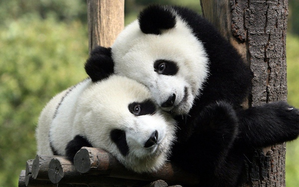

PANDA
Giant pandas are beloved black-and-white bears native to the mountain forests of central China. They are one of the rarest bears in the world and are considered a symbol of wildlife conservation. Although classified as bears, pandas have a very different diet from other bears - they are almost completely vegetarian. They have a special extended wrist bone that works like a thumb to hold bamboo. An adult panda weighs between 70 and 120kg and has thick woolly fur to keep warm in the cold mountains.
The panda's life revolves around bamboo. They spend 10 to 16 hours a day eating bamboo because it is very low in nutrients, so they need to eat up to 38kg of it daily to survive. Their strong jaws and large molars are perfect for crushing tough bamboo stalks. Despite being clumsy-looking, they are excellent tree climbers and swimmers. That iconic black-and-white pattern is thought to be camouflage - the white helps them hide in snow, while the black helps them hide in shade.
They are mostly solitary and have a very good sense of smell that they use to avoid each other and find mates. In the wild they roam a large territory, marking trees with scent. Cubs are born tiny, pink and blind, weighing only about 100 grams, and stay with their mothers for over a year.
WHERE WILL YOU FIND THEM
You will find the pandas at pen E30, in the bamboo forest exhibit near the pandas gift shop.